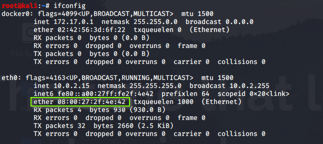

Media Access Control Address(MAC)
Its a unique identifier assigned to a network interface controller (NIC) for use as a network addressin communication with network segments(Ethernet,Wi-Fi and bluetooth).
Its recognized as six groups of two hexadecimal digits,seperated by hyphens, colons, or without a separator.
Starting three pairs in mac tell the vendor name.
Check it on Mac Lookup table online
Que) How to check your MAC Address?- Open Terminal
-
- ifconfig (Linux Distro)
- ipconfig /all (Windows Distro)
